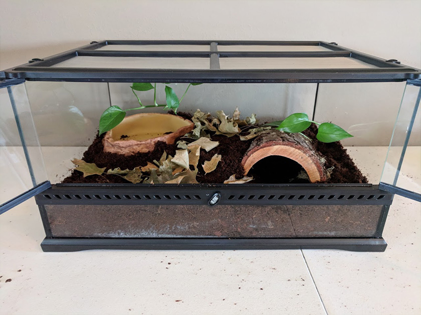
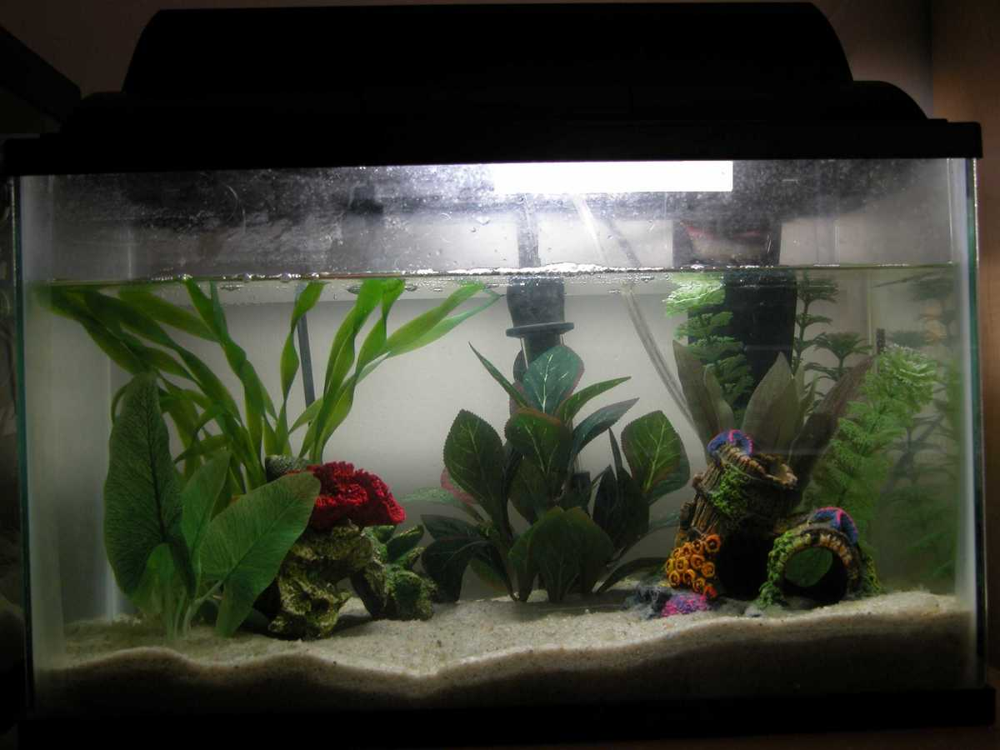
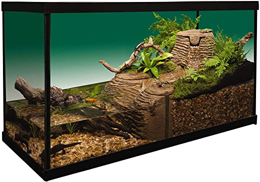
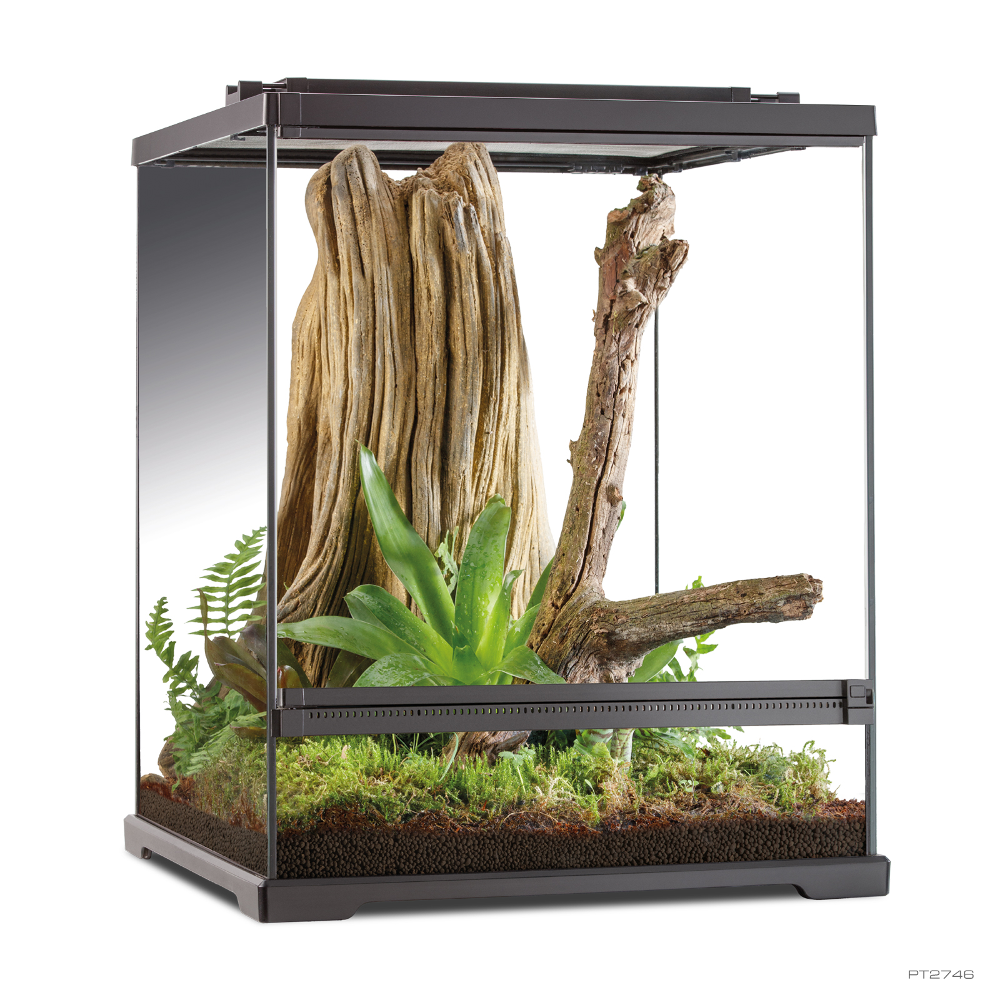
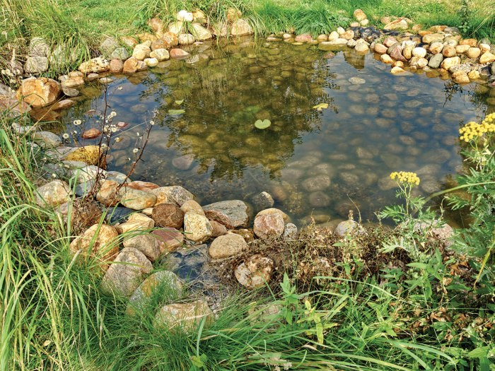

Frogs are definitely cute animals (if you don't think so,
re-evaluate life), and some can be domesticated. These two facts
enable frogs to be suitable choices for pets (yes, pets need to be
cute). Frogs are however, a bit more difficult to take care of than
other pets. Research on pet frog care is definitely required prior to
adoption for the sake of both the frog's and owners' safety.
Before going out to a pet store/animal shelter to
adopt your first frog, here are a few things you should know about
frog care:
1
When considering what kind of frog you want, aesthetics should
not be the only criteria (as tempting as it may be). Firstly,
some frogs should not be taken in as pets (no matter what) as
they either require a natural wild environment for surviaval,
are endangered, or are very poisonous. Among the frogs
that you may adopt, you'll need to consider your living
conditions, time dedication, and expectations.
Some frogs require
more attention and more strict environmental conditions in order
for it to remain healthy. When the time comes to make a decision
on the species of frog, be sure to have done the research on that
specific frog to see if you have the facilities to support it.
Since frogs are known to reside in many different areas around
the world, there is no universal style of habitat that all frogs
can safely live in. There are factors found in species of frogs
that make them unique, and therefore require unique conditions
for their habitat. Some examples of such factors are their
jumping ability, size, and ratio of living on land vs. water.
Yes, this does mean you need to do research
on what kind of habitat supports your desired frog.
Frog habitats do need to be built from scratch, but
there are some general styles that serve as a foundation as to
how the habitat needs to be built (see more on habitats below).
2
3
Frogs are sensitive animals. They can contract and carry
diseases that could potentially be transmitted to humans and/or
other pets if not handled properly. When handling a frog,
you should wear moistened latex (*wink wink) or vinyl
gloves so that
you avoid any possibiity of contracting disease. More
importantly, the gloves should be worn in order to protect the
frog because chemicals from a human's hand (like oils, soaps,
moisturizers, etc.) can irritate a frogs skin, resulting in
them getting ill and/or contracting a disease. So it is possible
to give a frog a disease, and then contract it from the frog
(a great "reap what you sow" moment). Before bringing a frog
home, it's recommended to take it to a vet to see if they have
any harmful transmittable diseases. If they do, you would
need to quarentine them.
Frogs are carnivorous animals, which can come off as a surprise
given their size and cuteness. Furthermore, they enjoy eating their
food alive! Crickets are the staple food that frogs enjoy. Other
insects frogs might like are worms and
fireflies. There are some frogs that are capable of eating small
rodents (though it shouldn't be consumed on a regular basis)!
Feeding the food
itself vitamin/mineral suplements helps with a frog's diet (see more
on frog dieting below).
4
5
Frogs are social creatures (with other frogs- not humans). Most frogs (not all)
like to have some company as it is better for them mentally. So why not give your
one froggy a friend or two (or three)? There are some frogs that can interact
with other speices
but there are also some that cannot. Again, research must be done
prior to the adoption process. Do understand that it will
get more expensive to take care of multiple frogs as it would entail larger
habitats and more live food. There are a few frogs that are capable of resorting
to canibalism, so it's best to keep them alone or the very least separated from
the other frogs.
Frog Habitats
There are various types of habitats that accomodate for the different types of frogs
out there. With regards to the dimensions and environmental layout of the enclosure,
you need to consider the frog's physiology and habits. There are five main types of
habitats that could be taken into consideration. Some of these styles can be combined
with another, if you have the resources. Click on the tabs below to learn more of each
style of habitat.

Considered one of the simplest layouts for a frog habitat. The
environment is perfect for frogs that naturally live in a dry climate setting (works
for most toads).

Pretty much a fish tank, but for frogs. But a frog cannot share a habitat
with a fish because well... there's a good chance the fish will dissapear. An aquatic
environment is best suited only for aquatic frogs (pretty straightforward).

A very good choice for most frogs species. As the name suggests,
multiple zone habitats have different enclosures that consist of different environments.
These enclosures are connected, allowing the frog to move from zone to zone. These
habitats are more expensive but accomodate most frogs' needs.

The enclosures of these environments are grand in terms of height (the picture is
deceiving). These tanks are designed this way to give frogs that like to jump/climb
the space to do so.

If you have enough space in your backyard, an installation of a pond would be
beneficial to frog species that are native to pond areas. Other frogs and insects not
native to ponds can be engdangered in the setting however.
Habitat Conditions
When it comes to aesthetics and features of a frog habitat (ie. soil type, number of
climbing trees, rock positioning), you have compete creative control.
However, you are not merely just the interior decorator, but also the interior designer
(yes, there's a difference). As an interior designer, you need to ensure that certain
attributes of your frog habitat meet these conditions:
NOTE: Most of these conditions will be automatically met if you are able to create
a pond habitat.
Humidity: Frogs require higher humidity levels (than a standard room level) in
order to keep their skin healthy. Misting is known to the best way to increase
humidity in an enclosure. Using a misting machine, fogger, or a simple spray bottle
(spray often) are ways you can implement misting.
Temperature/Lighting: There is a certain temperature range that frogs require
in their habitat in order for them to remain healthy and active. Some frogs require UVB
lighting for that good ol' vitamin D3 exposure. Heating pads at the bottom/sides
of the enclosure or a basking lamp placed at the top of the enclosure, are both good
options for raising the temperature in a frog habitat.
Water: One of the key things to moderate is the water in a frog habitat.
Frogs absorb the oxygen in water (this is how aquatic frogs
stay submerged in water for great periods of time), but can also absorb other elements found
in the water if it is contaminated. Chlorine-based tap water, for example, should not be used
as the water source for a frog habitat because it would result in the frog absorbing the
chlorine through its semi-permiable skin (not a good thing). Frogs prefer neutral pH water
with natural minerals.
There are more nifty tools that can help with raising a frog! Doing more research is
encouraged if you are interested. Most of the items mentioned can be found at your
local pet store (given that they sell frogs).
Frog Diet
Frogs don't have teeth, so they need to swallow their live food
whole. No vegetarian meal is part of a
frog's diet. There is however, a study that found that some frogs
in hotter areas shift to a omnivorian/vegetarian diet due to
climate change. For more details on that, click
here. The amount of food fed to a frog in a day varies, so some
trial-and-error is required for finding the right amount.
Three crickets a day is a good start. From there, you can gauge whether
to give more or less depedning on how much the frog eats. For a balanced
diet, it is advised to change their meals up every now and then, and to
coat supplements (often referred as dusting) on the food before
feeding them to the frog.
The most common way of dusting is to place crickets (or whichever insect) in a
bag, add the supplement powder in, then shake the closed up bad for a few seconds
(dusting is pretty much a cricket frat party). Calcium supplements should be
coated on the frog's
primary source of food for pretty much all their meals (for strong bone growth).
Vitamin supplements are not as necessary, so 1-2 times a week is a good rate.
This guideline is a good starting point for feeding frogs, but may need to be
adjusted depedning on the species of frog that is under domestic care.
Are Frogs Right For You?
Now that you know more about how to take care of a frog, the one question remaining is:
"should I take frog in as a pet"? You might be wondering why this question wasn't addressed
near the beginning of this page. Well, Touseef wanted you to read. That's it. No other
reason. If you made it to this section without reading anything, please scroll back up and
read (he worked somewhat hard on this). If you choose not to... well, okay then. Anyways,
here's a little pro/con table that summarizes what frog care might entail.
Pros
they're cute
relatively low maintanence
lively display pets
they're pretty cute
minimal maintanence costs
also, they're very cute
Cons
not ideal for physical interaction
not great for kids (solution: abandon them)
can be noisy (along with their food)
initial set-up cost can get expensive
The key takeaway from everything that has been said in this page is:
prior to adopting a frog,
DO YOUR RESEARCH
Congratulations! You're done with reading about frog care (the beginner's level at least).
Scroll back up to the top menu to explore other pages.